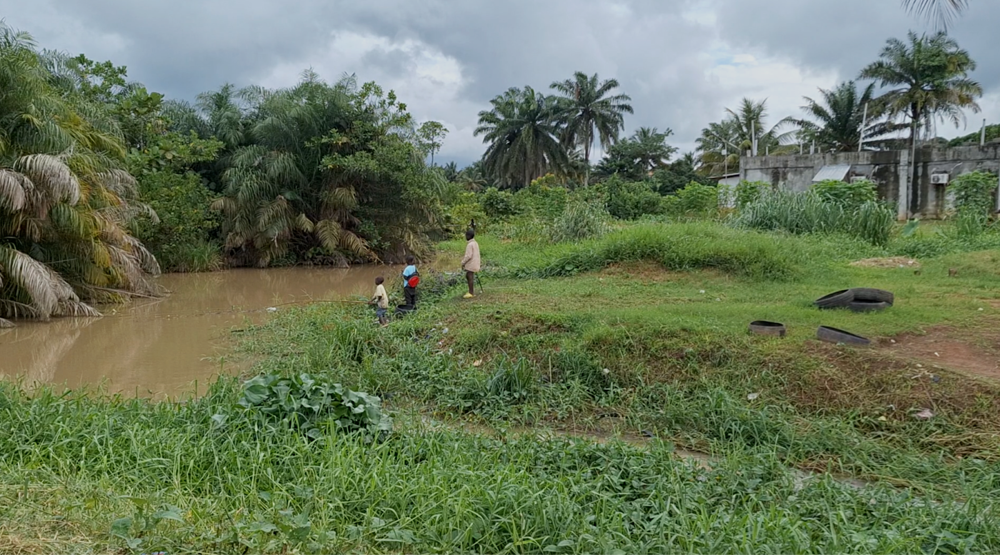
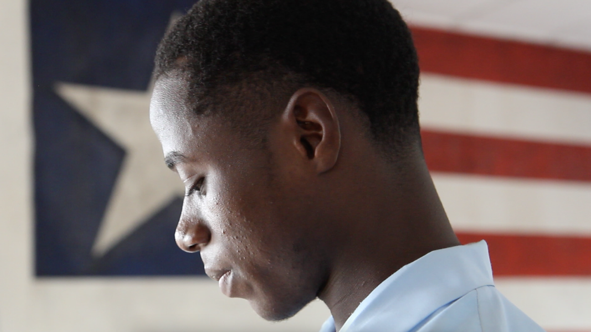
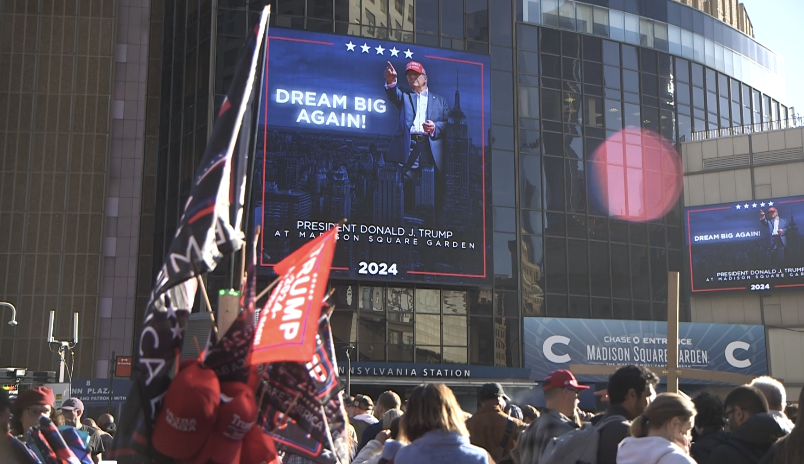

Afghan Americans Live with Fear and Scrutiny After D.C. Shooting
After one man’s violent act, the diaspora faces stalled asylum cases, increased detentions, and a sense of collective punishment.

After one man’s violent act, the diaspora faces stalled asylum cases, increased detentions, and a sense of collective punishment.

An estimated quarter of domestic violence calls to NYPD’s 66th Precinct come from Bangladeshi victims.

The Rubin Museum of Himalayan Art leaves a complex legacy and relationship with the Tibetan diaspora.

President Trump’s proposed travel ban would block all Afghanistan citizens from entering the U.S., cutting off one of their last remaining pathways to safety.

Shortly after landing in Monrovia, I went to a resto-bar in an area called Sinkor.

Forest communities worry about livelihoods as Liberia plans to sell forests into carbon markets.

In 2021 Emmanuel Tuloe became a hero after returning $50,000 — but the promise never came.

Musicians turn a restaurant hall into a jamming space after an interfaith dinner.

Election results show strong support for Trump among NYC’s Latinx community.